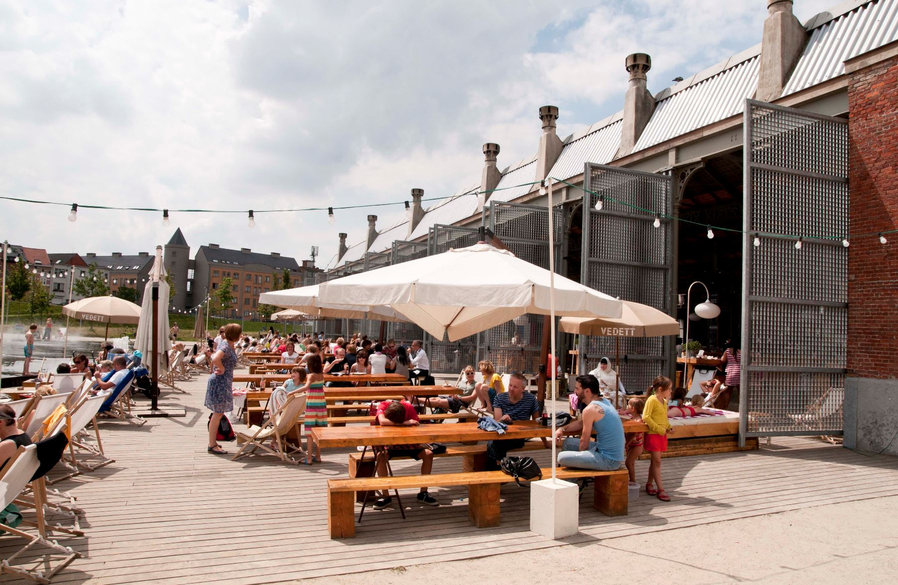

Isarose
Lifestyle, fashion and beauty
Tofu is vies

“Weet je wat, ik word veganist, want tofu is een miljoen miljard keer lekkerder dan slavinken,” zei niemand in de geschiedenis van de mensheid.
Tofu heeft niet de allergeweldigste reputatie. Terwijl het wel allergeweldigst lekker is kan zijn! Als je dat niet al vindt, hier een paar tips om je van gedachten te laten veranderen.
Gepost op 26 mei 2016
Categorie: Health, Categorie 3
Vijf manieren om je bandana te rocken
Het woord ‘bandana’ kan bij sommigen misschien verkeerde impressies opwekken, maar het bekende sjaaltje kun je op verschillende manieren dragen en wij kunnen je garanderen dat je er altijd mooi voor de dag mee kunt komen. Een simpel detail met veel impact. Welke look is jouw favoriet?
Gepost op 22 mei 2016
Categorie: Fashion
Met tags: Fashion, Trends, Bandana
Antwerpen is stad van de zomerbars
De midzomernacht geeft het officiële startschot van ons favoriete seizoen en dat hebben ze in Antwerpen goed begrepen. Wie zijn vakantiedagen of zwoele zomeravonden op een leuk terras wil doorbrengen, heeft daar dit seizoen nog meer keuze dan anders.
Gepost op 8 mei 2016
Categorie: Lifestyle